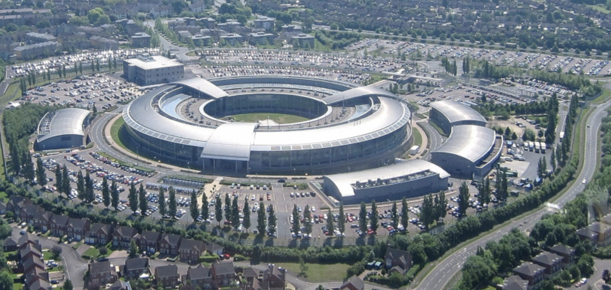
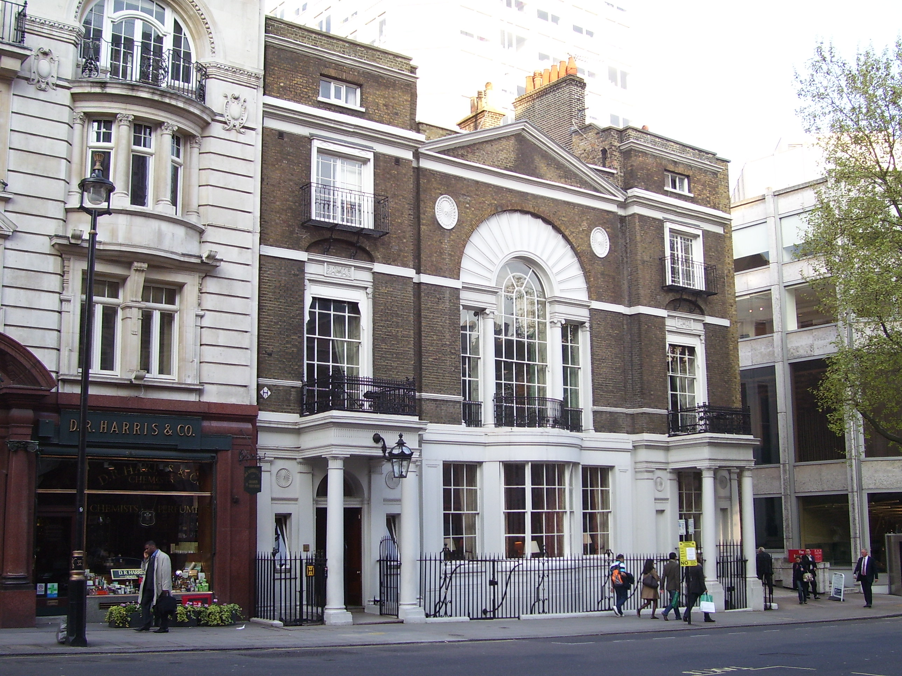
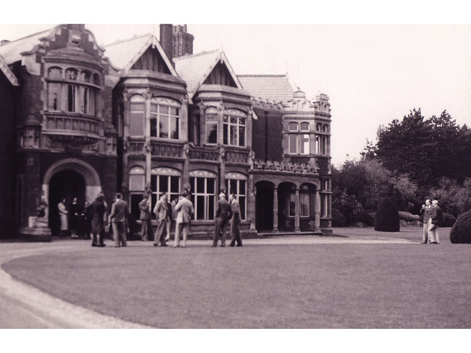
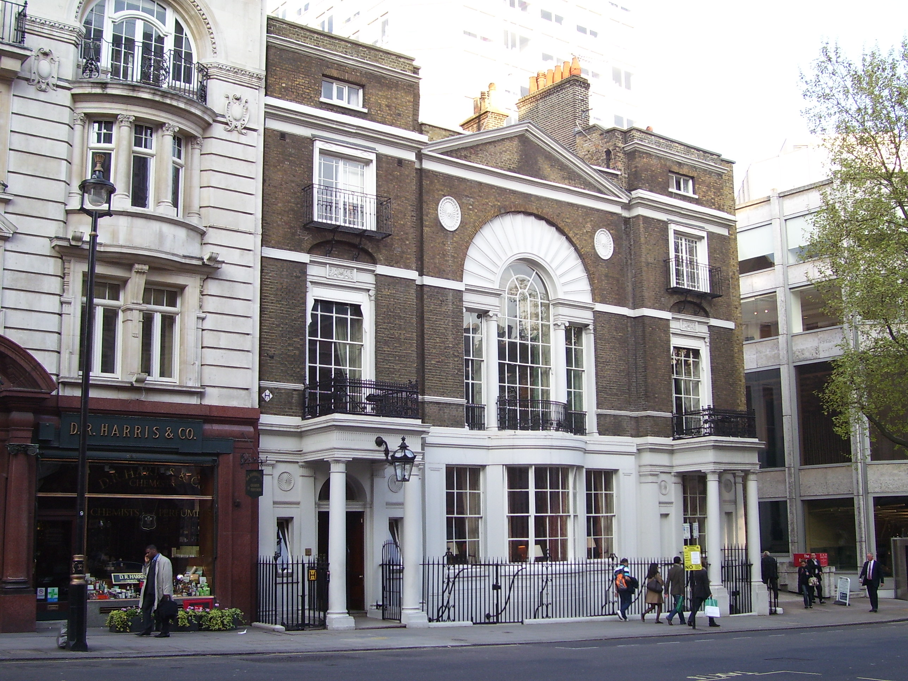
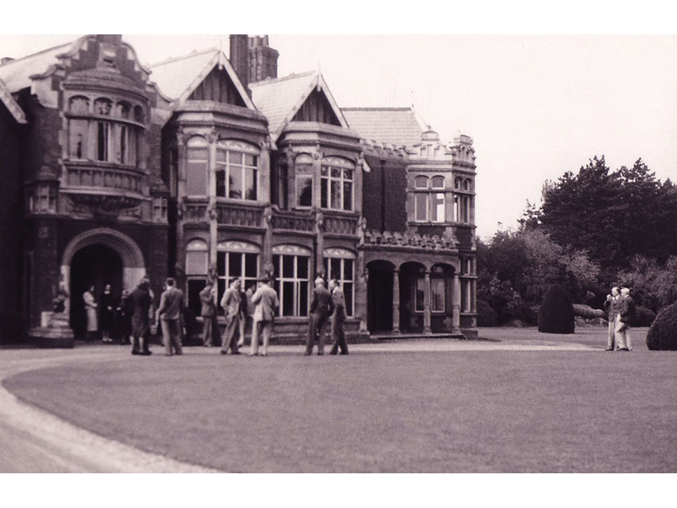

Spy Buildings in the UK

Fig.1. UK: GCHQ HQ. The UK equivalent of the NSA.
 Fig.2. UK: MI6 HQ (Since 1994), appears in Bond films, a shot from Skyfall (2012)

Fig.3. UK: Boodle's gentlemen's club (a site where the MI6 used to recruit its employees).

Fig.4. UK: Bletchley Park (a site where Allies (British and Polish decoders) decrypted the Enigma Cipher read important parts of German radio traffic on important networks and was an invaluable source of military intelligence throughout the war. One of the Cambridge Five, John Cairncross, worked at Blethcley Park in 1942-43.
Fig.2. UK: MI6 HQ (Since 1994), appears in Bond films, a shot from Skyfall (2012)

Fig.3. UK: Boodle's gentlemen's club (a site where the MI6 used to recruit its employees).

Fig.4. UK: Bletchley Park (a site where Allies (British and Polish decoders) decrypted the Enigma Cipher read important parts of German radio traffic on important networks and was an invaluable source of military intelligence throughout the war. One of the Cambridge Five, John Cairncross, worked at Blethcley Park in 1942-43.